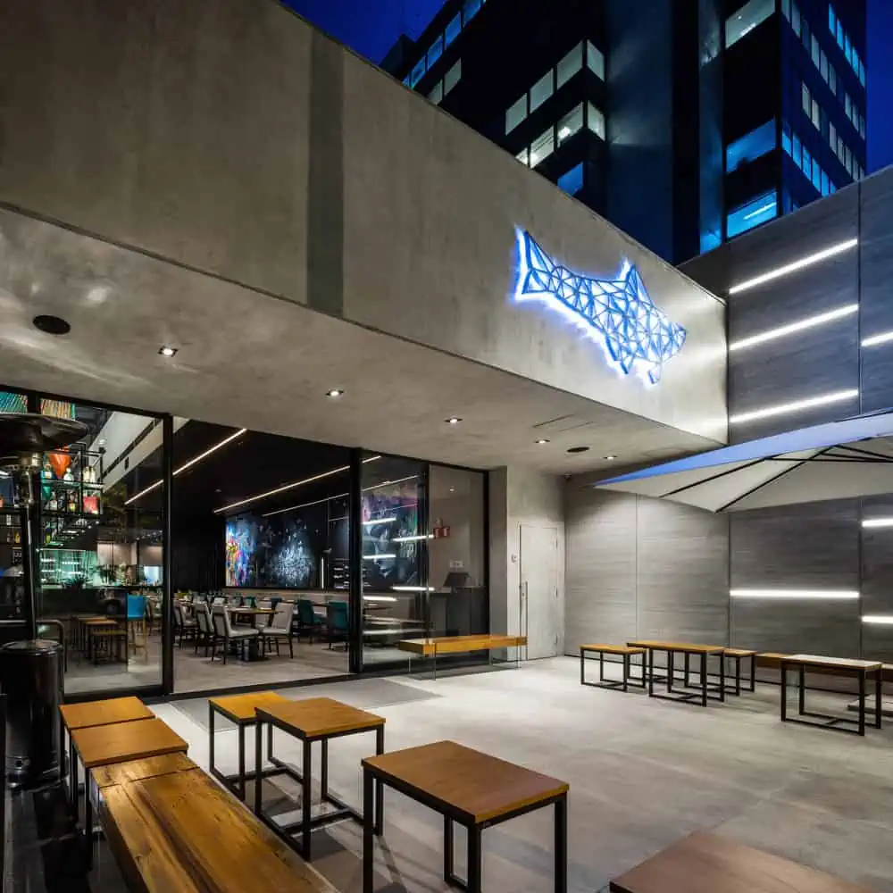

Imakay
O Imakay São Paulo busca trazer pra capital paulista um olhar diferente para a cozinha japonesa.
O Imakay é uma fusão entre a culinária japonesa e a peruana, proporcionando uma experiência única de sabores.
Com um ambiente sofisticado e acolhedor, o restaurante oferece pratos cuidadosamente preparados que misturam o
frescor dos ingredientes japoneses com o toque vibrante da gastronomia peruana. Do sushi ao ceviche,
o Imakay se destaca pela criatividade e pela excelência em cada detalhe.
